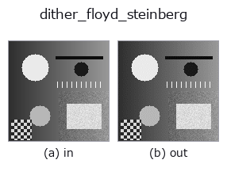

gray op• Data kinds: image → image
• Call: fullseye.apply(img, "dither_floyd_steinberg", a=0.5, b=0.5) (the 2-D model is one image plus two scalar knobs a,b∈[0,1])

*The figure is the actual output on a synthetic 128×128 input. Left: input, right: output. Point clouds are drawn as a top-down scatter (brightness = z), 1-D series as a line plot, volumes as the maximum-intensity projection along z, videos as the middle frame, complex images as magnitude; return values that are not pictures are shown as the values themselves.*
Sweeping knob a (0.1 / 0.5 / 0.9, the other knob at its default):
▸ dither_floyd_steinberg: knob a sweep (docs site)
*Knob b does not change the output (measured: identical at 0.1 / 0.5 / 0.9).*
On other images (synthetic scene / photo / coins. Top row: inputs, bottom row: their outputs. Knobs at default):
▸ dither_floyd_steinberg: other inputs (docs site)
*The 4th column is a colour (H,W,3) input. This op handles colour without crossing channels (it does not convolve the colour channel as a third spatial axis).*
> This operator's description has not been translated yet. The original text follows as it is.
誤差拡散ディザ(Floyd–Steinberg)。`a がビット数 1〜8、b` は未使用。
各画素を丸めたあと、出た誤差を右 7/16・左下 3/16・下 5/16・右下 1/16 に配る。
平均は保たれる(局所的に足し引きが釣り合う)ので、平坦な階調が縞にならずに
点の密度で表現される。1 ビットまで落としても絵として読めるのはこれのため。
適用条件: (1) 走査順に依存するので、画像を切り出す位置を変えると結果が変わる
—— タイル処理や並列化には向かない(そちらは `dither_ordered`)。(2) 誤差を隣へ
送るので、細い線の周りに尾を引く。(3) ここでは素直な逐次実装なので、大きな画像では
`dither_ordered` よりずっと遅い。
• gallery2d_gray_arith family guide
• Sample-data catalog (download URLs / licences) — 2-D uses skimage.data (BSD/public domain) plus synthetic images; 3-D lists download URLs for real data sources (Stanford, PDS, …).
• Operator provenance and references — the sources of the research/methods this op family came from.
• The canonical algorithm (author, year) and its uses are named in the family usage guide above.
The program below has been verified to run (same input as the figure). In Studio's help this block becomes buttons that load and run it on the spot.
dither_floyd_steinberg 0.50 0.50
▸ Load this pipeline · Load & run
• gallery2d_gray_arith — py -3.11 examples/gallery2d_gray_arith.py
image as input)identity · gaussian · mean_box · bilateral · unsharp · median · min_filter · max_filter
gray)gamma · quantize_uniform · quantize_lloyd_max · quantization_error · dither_ordered · companding_mu_law · banding_map · invert
*Provenance: ops.py — 2D operator registry. This per-op note is generated by tools/opdocs.py md (do not hand-edit).*
© 2026 Kazufumi Furuse — Fullseye operator documentation. Licensed under Apache-2.0.
{kind=link}
{kind=link}